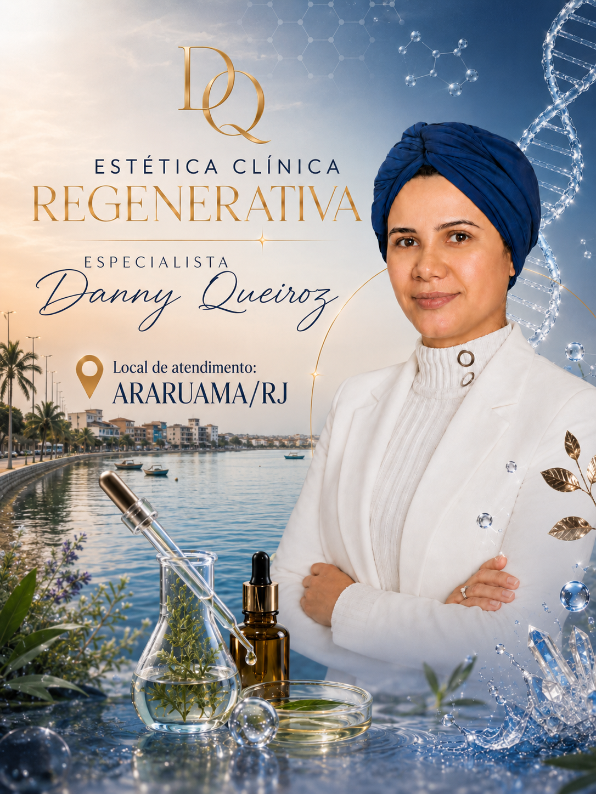
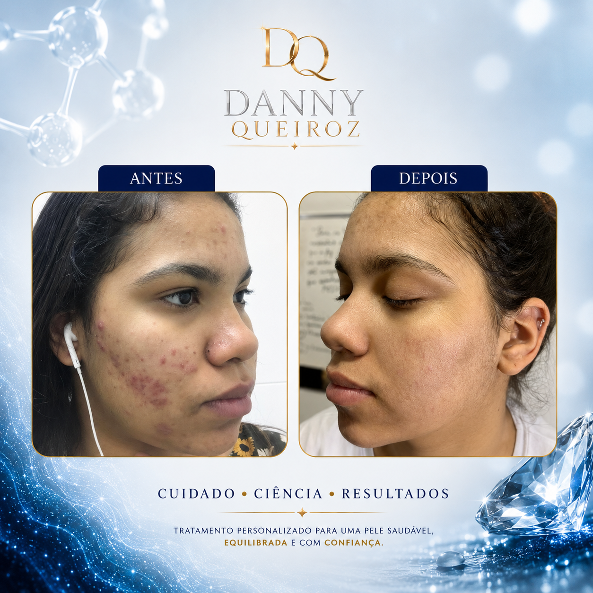
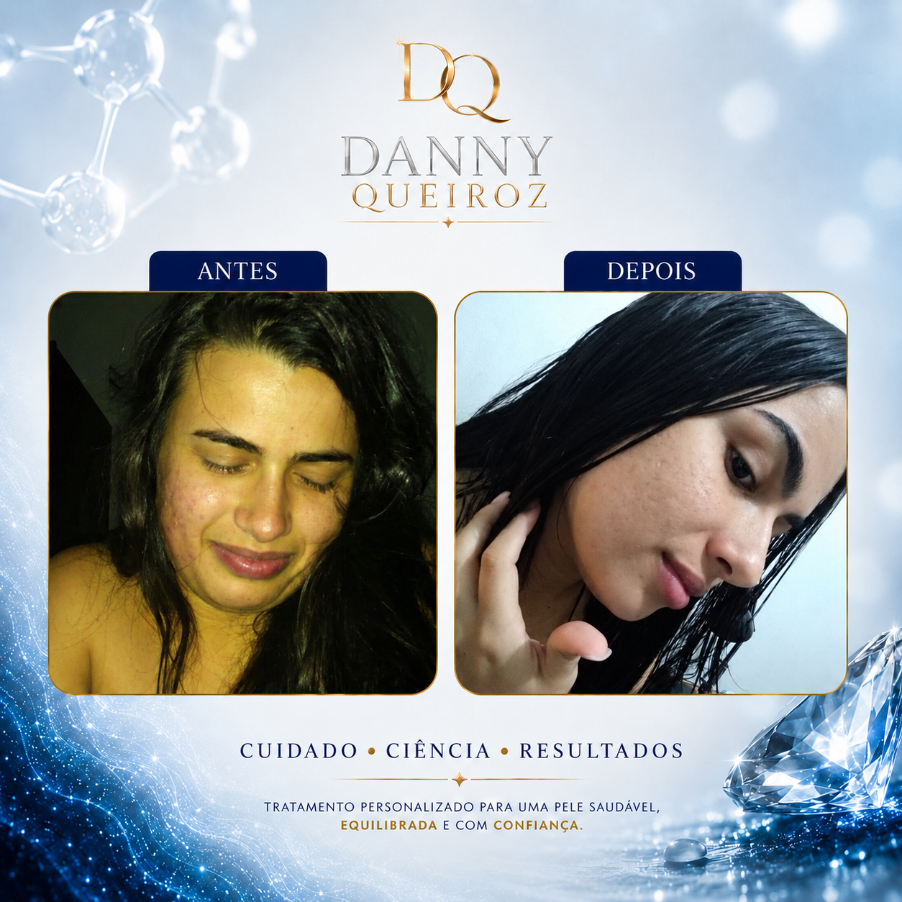

Atendimento especializado para acne em Araruama RJ, Iguabinha, Praia Seca, São Vicente, Bananeiras e bairros da Região dos Lagos.
Tratamento de acne para adolescentes e adultos em Araruama com protocolos personalizados para acne inflamatória, acne hormonal, cicatrizes de acne e controle da oleosidade.
Agendar Avaliação
O tratamento da acne vai muito além da aplicação de cosméticos. Cada paciente possui fatores diferentes que podem influenciar diretamente o aparecimento e a persistência das lesões.
Durante a consulta realizamos uma investigação detalhada para identificar fatores hormonais, emocionais, alimentares e hábitos de vida que podem estar relacionados ao quadro clínico.
A proposta é construir um plano de tratamento completo, seguro e personalizado para que você tenha resultados consistentes e duradouros.
O tratamento de acne em Araruama pode ser feito de diversas formas, dependendo do grau da acne. A base do tratamento utiliza dermocosméticos selecionados de forma individualizada para cada paciente.
Além disso, fazemos ajustes na alimentação, investigamos fatores emocionais, avaliamos o estresse e verificamos profundamente tudo aquilo que pode estar contribuindo para o aparecimento ou agravamento da acne.
O protocolo inclui uma limpeza de pele nanotecnológica seguida do tratamento específico para o grau de acne identificado durante a avaliação.
O paciente é acompanhado mensalmente, com retornos a cada 30 dias para monitoramento da evolução e realização dos ajustes necessários.
Cada sessão inclui a limpeza de pele nanotecnológica, os procedimentos específicos indicados para aquele momento do tratamento e uma consultoria personalizada sobre o uso dos cosméticos mais adequados para a sua realidade.
Também fornecemos material instrutivo de fácil compreensão para que o paciente possa continuar os cuidados em casa com segurança e autonomia.
Dessa forma, o tratamento funciona através de uma abordagem completa, personalizada e focada em resultados sustentáveis a longo prazo.
Alterações hormonais podem aumentar a oleosidade da pele e favorecer o aparecimento de cravos e espinhas.
Saiba mais →Frequentemente associada a alterações hormonais, estresse, rotina inadequada de skincare e fatores inflamatórios.
Saiba Mais →Marcas permanentes podem surgir quando a acne não é tratada adequadamente ou existe manipulação das lesões.
Saiba Mais →Hiperpigmentações residuais podem permanecer mesmo após o desaparecimento das espinhas.
Saiba Mais →Cada caso possui características próprias e os resultados variam conforme o grau da acne, adesão ao tratamento e resposta individual.

Controle de acne inflamatória em paciente adolescente.

Melhora da acne adulta associada ao controle da oleosidade e rotina personalizada.
Quanto mais cedo a acne for tratada, maiores são as chances de evitar manchas e cicatrizes permanentes. Agende sua avaliação e descubra qual é o protocolo mais adequado para o seu caso.
Quero saber qual protocolo é indicado para mimAlém do atendimento para tratamento de acne em Araruama, também realizamos atendimentos em outras regiões do Rio de Janeiro.
Em muitos casos, sim. Após a avaliação já iniciamos as primeiras orientações e intervenções.
Depende do grau da acne, mas normalmente as primeiras melhoras são observadas nas primeiras semanas.
Sim. A acne adulta pode ser tratada através de protocolos personalizados e investigação dos fatores envolvidos.
Sim. Utilizamos limpeza de pele nanotecnológica associada aos protocolos específicos.
Além do tratamento de acne em Araruama, também realizamos atendimento para melasma, rosácea, rejuvenescimento facial, manchas e consultoria personalizada de skincare.
Conheça Todos os Tratamentos →